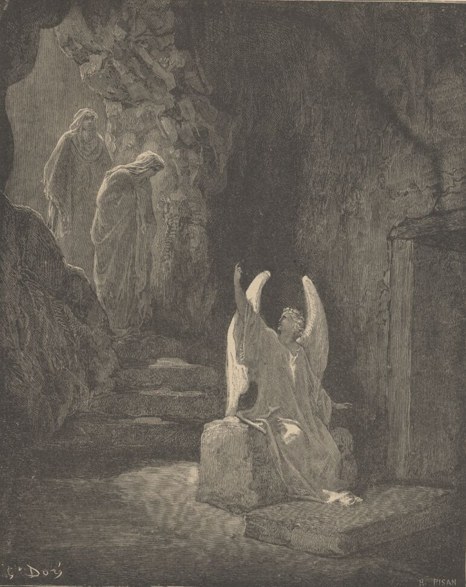

The steadfast love of the LORD never ceases; his mercies never come to an end; they are new every morning.
Lamentations 3:22–23
ESV
Streaks with grace days — because life happens
asimplewaytopray.com